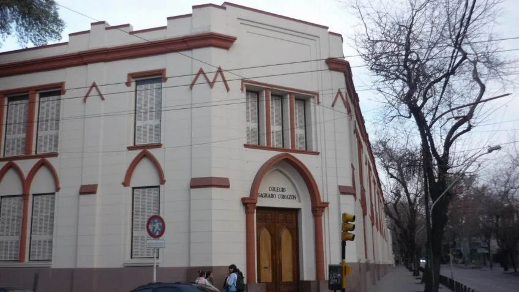

La comunidad educativa del Colegio Sagrado Corazón vivió este miércoles una jornada marcada por el dolor.
La comunidad del Colegio Sagrado Corazón en Mendoza vive momentos de dolor tras la trágica muerte de Francesca Mazza, una alumna de 12 años, durante su viaje de egresados en Carlos Paz. Los estudiantes de séptimo grado regresaron el miércoles y fueron recibidos en un emotivo reencuentro con sus padres, mientras la escuela prioriza su contención y bienestar emocional con acompañamiento psicológico.
Las Hermanas Esclavas del Sagrado Corazón emitieron un comunicado pidiendo respeto hacia la familia de Francesca y sus compañeros, informando que las próximas noticias serán comunicadas oficialmente. El sepelio de Francesca será hoy en Guaymallén, permitiendo que la comunidad educativa le dé el último adiós.